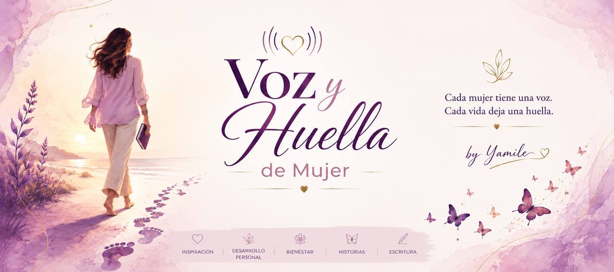

"La vida no me pedía más velocidad. Me pedía presencia."
Presencia
Cuando dejé de correr, empecé a vivir
No recuerdo el día exacto en que dejé de correr. Fue un susurro interno que se fue haciendo claro con el tiempo.
Junio 2026Leer

Querid@s lectoras
Reflexiones honestas sobre soltar la prisa, escucharte y dejar tu huella en el mundo.
la reflexión de esta semana
Aprender a recibir
también es un acto
de amor propio.
Querid@s lectoras: en este devenir de la vida, en este caminar cotidiano, a veces nos encontramos con personas especiales. Personas a las que les encanta dar, con alegría, con el corazón abierto. ¿Te ha pasado que, cuando alguien así te entrega un detalle, te sientes un poquito comprometida, como si recibir viniera con una deuda invisible?
Leer completocada lunes, una pausa
Presencia
No recuerdo el día exacto en que dejé de correr. Fue un susurro interno que se fue haciendo claro con el tiempo.
Paz interior
¿Alguna vez te has sentido culpable por no hacer nada? La culpa por no hacer es un esquema impuesto que cargamos desde niñas.
Gratitud
Tengo amigas profundamente generosas. Hoy quiero hablar de lo que aprendí sobre recibir con el corazón abierto.
Dejar de correr no significó renunciar a mis sueños.
Significó aprender a caminarlos.
Hola, soy Yamile
Hay belleza en detenerse, en escucharse, en dejar que las cosas florezcan a su propio ritmo. Este espacio nació de la necesidad de compartir lo que aprendí en esos silencios.
No soy psicóloga ni coach — soy una mujer común, con experiencias reales que quizás resuenen en las tuyas. Si llegaste hasta aquí, creo que hay algo para ti.
Una reflexión que dura cinco minutos y puede acompañar tu semana. Sin prisa, sin ruido.
Puedes salir cuando quieras · Tu correo está a salvo